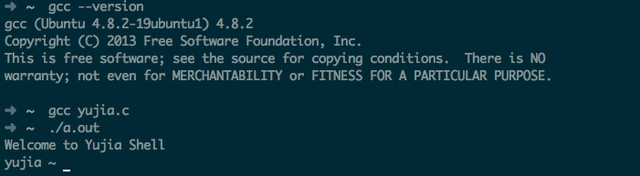
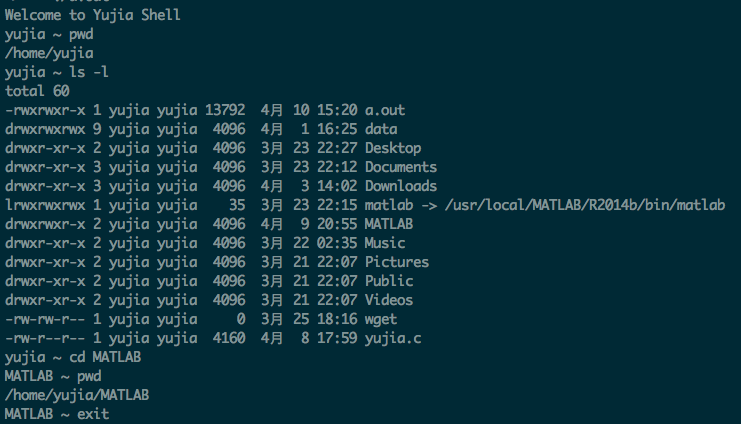
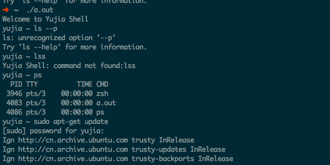
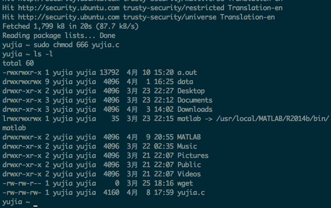
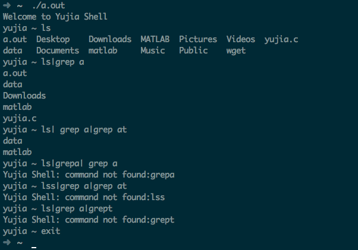

包昱嘉 5120719015
声明：此shell由本人通过互联网查询相关系统调用函数参数及作用后完全独立完成。
代码曾传给赵鹤宁同学参考。
主要使用fork-exec-waitpid-exit模型来完成简单的shell，对于无名管道的实现使用pipe-fork来实现。以下是各个函数设计的思路：
main：//主函数，无参数
process_command://外部命令执行，参数为用户输入的字符串，返回void
iterate_pipe: //通过迭代完成管道
printpwd:
main函数：
int main()
{
输出提示输入符号printpwd
while（输入字符读取成功）
{
if(字符串长度为1)//只输入了回车
进入下一个循环;
if(字符串长度达到了buf最大长度)
输出提示“command too long”
进入下一个循环
else if(字符串为"exit")
执行exit(0)
else if(字符串前两位为cd，第三位为换行符或空格)
按空格分割字符串得到字符串数组argv[]
if(argv只有一个元素)//即命令cd
获取当前用户默认目录
将工作目录切换到该目录
if(argv有两个元素)//cd dirctory
将工作目录切换到dirctory
if(切换失败)
错误输出"illegal address"
else
错误输出"illegal address"
输出提示输入符号printpwd
else
处理外部命令process_command
输出提示输入符号printpwd
}
}
process_command函数：
void process_command(char* buf)
{
将字符串最后一位换行符设为0
if(pid = fork()<0)
//fork 失败
错误输出"fork error"
else if(pid == 0)
//子进程
按“｜”来分割字符串,结果存入字符串数组commands//分割管道
执行迭代函数iterate_pipe(commands,num_pipe + 1,1)
else
//父进程
waitpid(pid, &status, 0) //等待子进程退出
return
}
iterate_pipe函数：
void iterate_pipe(char* commands[], int total_num, int current_num){
if (current_num == total_num)
//迭代终止
按空格分割字符串，结果存入数组argv
result ＝ execvp(argv[0],argv)//执行命令
if (result == -1)
//执行失败
错误输出“command not found”
exit(1)
else
//要创建管道
if(pipe(pipe_fd) == -1)
//管道创建失败
错误输出"Create pipe error."
exit(1)
if((child_pid = fork()) != 0)
//父进程
waitpid(child_pid, &status, 0)//等待子进程结束
//子进程结束后，修改标准输入
close(pipe_fd[1])
close(STD_INPUT);
dup(pipe_fd[0]);
close(pipe_fd[0]);
iterate_pipe(command, total_num, current_num + 1);//向后继续迭代
else
//子进程
//更改标准输出
close(pipe_fd[0])
close(STD_OUTPUT)
dup(pipe_fd)
close(pipe_fd[0])
按空格分割字符串得到字符串数组argv[]
result ＝ execvp(argv[0],argv)//执行命令
if (result == -1)
//执行失败
错误输出“command not found”
exit(1)
}
printpwd函数：
void printpwd()
{
获取当前工作目录存入pwdbuf
按"/"来分割pwdbuf
输出pwdbuf最后一个/后的字符，并输出"~" 作为提示符号
//输出结果： 如果当前工作目录为/home/user， 提示输入符号为："user ~ "
}
在gcc (Ubuntu 4.8.2-19ubuntu1) 4.8.2下编译通过，成功运行

执行pwd命令查看当前工作目录
执行外部命令ls -l语句
执行内部命令cd MATLAB进入当前目录下的MATLAB文件夹
执行内部命令exit退出shell

测试输入错误的外部命令lss
测试参数输入错误的外部命令ls --p
测试外部命令ps
测试debian环境中的外部命令sudo apt-get update(此部分由于列表过长分两段截图)

测试外部命令sudo chmod 666 yujia.c,并通过ls -l检查结果

测试管道：
ls查看当前目录文件
ls|grep a 测试无名管道
ls|grep a|grep at 测试多个管道
测试错误命令：
ls|grepa| grep a
lss|grep a|grep at
ls|grep a|grept

经过测试，这个简单的shell能够处理一般简单的外部命令和内部命令cd，exit。同时对于多个连续管道也提供了支持，对于一些错误命令的输入也能进行判别，基本运行比较稳定。
进一步可以考虑使用getchar()来替换fgets()，通过实时的读取输入的字符，可以实现向上向下键的history功能，也可以进一步实现tab功能。